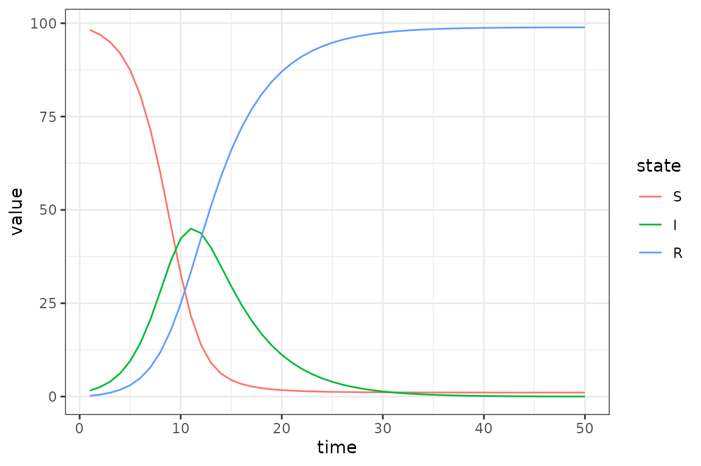
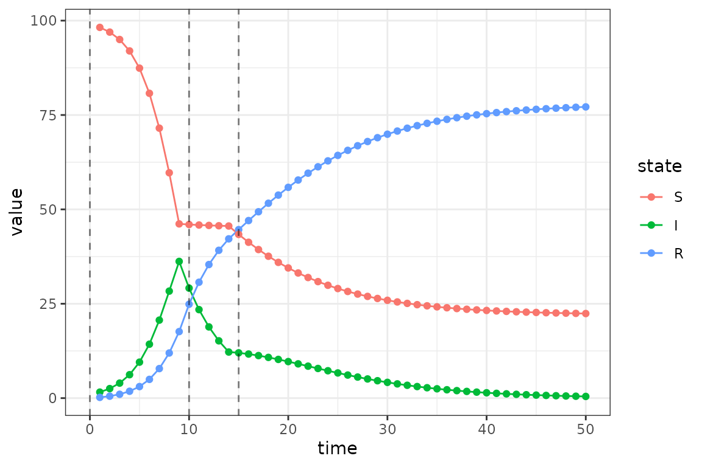
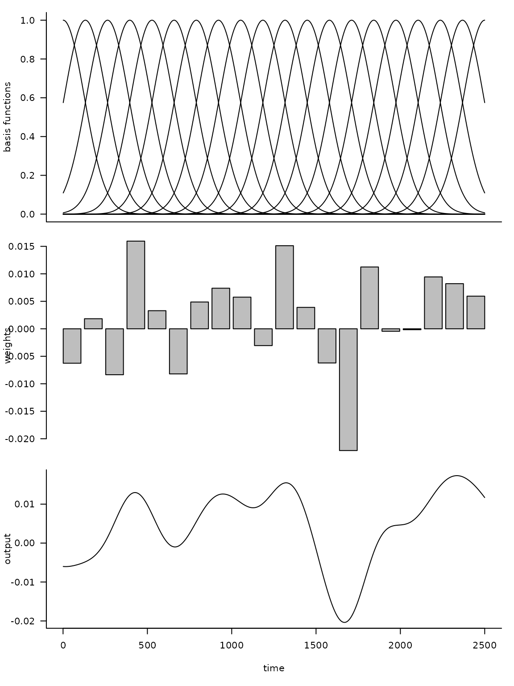

Specifying Time-Varying Parameters
Source:vignettes/time_varying_parameters.Rmd
time_varying_parameters.RmdBaseline SIR Model
Here we modify an SIR model so that transmission rate is time-varying.
sir = Compartmental(system.file("starter_models", "sir", package = "macpan2"))
simulator = sir$simulators$tmb(time_steps = 50
, state = c(S = 99, I = 1, R = 0)
, flow = c(foi = NA, gamma = 0.2)
, N = empty_matrix
, beta = 0.8
)
(simulator$report(.phases = "during")
%>% rename(state = row)
%>% mutate(state = factor(state, sir$labels$state()))
%>% ggplot() + geom_line(aes(time, value, colour = state))
)
Piecewise Time Variation
We now change the value of the transmission rate, beta,
at the beginning of time-step 10 and 15. In the first step we add to the
simulator a vector containing these change-points.
simulator$add$matrices(beta_changepoints = c(0, 10, 15))Next we add the values to which beta changes at these
time-steps.
simulator$add$matrices(beta_values = c(0.8, 0.01, 0.4))We also need a variable to track the current value of
beta. This beta_pointer starts at time-step
equal to 0, and it will be incremented throughout the simulation.
simulator$add$matrices(beta_pointer = 0)We increment beta_pointer using the time_group
function that returns either beta_pointer or
beta_pointer + 1 depending on whether or not the current
time-step is at a change-point in beta_changepoints.
simulator$insert$expressions(
beta_pointer ~ time_group(beta_pointer, beta_changepoints),
.phase = "during"
)We update beta at every iteration of the simulation loop
using this beta_pointer.
simulator$insert$expressions(
beta ~ beta_values[beta_pointer],
.phase = "during"
)And that’s it. Now we plot the updated simulations using these change-points, which we highlight with vertical lines.
s = simulator$report(.phases = "during")
(s
%>% rename(state = row)
%>% mutate(state = factor(state, sir$labels$state()))
%>% ggplot()
+ geom_line(aes(time, value, colour = state))
+ geom_vline(
aes(xintercept = x),
linetype = "dashed",
alpha = 0.5,
data = data.frame(x = simulator$get$initial("beta_changepoints"))
)
)
Calibrating Time Variation Parameters
First we simulate data to fit our model to, to see if we can recover the time-varying parameters.
set.seed(1L)
I_observed = rpois(
50,
filter(s, matrix == "state", row == "I")$value
)
plot(I_observed)Then we add a few matrices to the model for keeping tracking of information used in model fitting.
simulator$add$matrices(
## observed data
I_obs = I_observed,
## simulated trajectory to compare with data
I_sim = empty_matrix,
## location of I in the state vector
## (the `-1L` bit is to get 0-based indices instead of 1-based)
I_index = match("I", sir$labels$state()) - 1L,
## matrix to contain the log likelihood values at
## each time step
log_lik = empty_matrix,
## need to save the simulation history of each of these matrices
.mats_to_save = c("I_sim", "log_lik")
)Now we need some new expressions. The first expression pulls out the I state from the state vector.
simulator$insert$expressions(
I_sim ~ state[I_index],
.phase = "during"
)The second expression computes a vector of Poisson log-likelihood values – one for each time step.
simulator$insert$expressions(
log_lik ~ dpois(I_obs, clamp(rbind_time(I_sim))),
.phase = "after"
)
simulator$replace$obj_fn(~ -sum(log_lik))Next we declare the beta values as parameters to be optimized on the log scale.
simulator$add$transformations(Log("beta_values"))
simulator$replace$params(
default = log(mean(simulator$get$initial("beta_values"))),
mat = rep("log_beta_values", 3L),
row = 0:2
)Finally we fit the model back to the simulation data.
simulator$optimize$nlminb()
#> Constructing atomic D_lgamma
#> outer mgc: 736.1414
#> Constructing atomic D_lgamma
#> outer mgc: 112.6655
#> outer mgc: 71.38648
#> outer mgc: 13.6616
#> outer mgc: 12.58091
#> outer mgc: 3.638083
#> outer mgc: 1.399513
#> outer mgc: 1.609453
#> outer mgc: 1.140347
#> outer mgc: 0.5870909
#> outer mgc: 0.2527136
#> outer mgc: 0.09938628
#> outer mgc: 0.03753935
#> outer mgc: 0.01394885
#> outer mgc: 0.005150654
#> outer mgc: 0.001897432
#> outer mgc: 0.0006983805
#> outer mgc: 0.0002569678
#> outer mgc: 9.453969e-05
#> outer mgc: 3.478009e-05
#> outer mgc: 1.2795e-05
#> outer mgc: 4.707033e-06
#> outer mgc: 1.731623e-06
#> outer mgc: 6.370286e-07
#> outer mgc: 2.3435e-07
#> outer mgc: 8.621247e-08
#> outer mgc: 3.171579e-08
#> $par
#> params params params
#> -0.1710158 -22.8268369 -0.8291142
#>
#> $objective
#> [1] 99.74231
#>
#> $convergence
#> [1] 0
#>
#> $iterations
#> [1] 26
#>
#> $evaluations
#> function gradient
#> 28 27
#>
#> $message
#> [1] "relative convergence (4)"We can see that the optimizer converges
(i.e. $convergence = 0) in 26 iterations.
On the log scale we see that the optimizer finds different values
(current) than it started at (default).
simulator$current$params_frame()
#> par_id mat row col default current
#> 1 0 log_beta_values 0 0 -0.9079919 -0.1710158
#> 2 1 log_beta_values 1 0 -0.9079919 -22.8268369
#> 3 2 log_beta_values 2 0 -0.9079919 -0.8291142More importantly the beta values on the untransformed scale recover to the values used in the simulations, although the second fitted beta value is much smaller than the true value.
data.frame(
fitted = formatC(
exp(simulator$current$params_frame()$current),
format = "e", digits = 2
),
true = simulator$get$initial("beta_values")
)
#> fitted true
#> 1 8.43e-01 0.80
#> 2 1.22e-10 0.01
#> 3 4.36e-01 0.40Radial Basis Functions for Flexible Time Variation (In-Progress)
This section uses radial basis functions to generate models with a flexible functional form for smooth changes in the transmission rate.
Before we can add the fancy radial basis for the transmission rate, we need a base model. We use an SIR model that has been modified to include waning.
sir = Compartmental(system.file("starter_models", "sir_waning", package = "macpan2"))
sir$flows()
#> from to flow type
#> 1 S I foi per_capita
#> 2 I R gamma per_capita
#> 3 R S wane per_capitaThe macpan2::rbf function can be used to produce a
matrix giving the values of each basis function (each column) at each
time step (each row). Using this matrix, \(X\), and a weights vector, \(b\), we can get a flexible output vector,
\(y\), with a shape that can be
modified into a wide variety of shapes by changing the weights
vector.
\[ y = Xb \]
The following code illustrates this approach.
set.seed(1L)
d = 20
n = 2500
X = rbf(n, d)
b = rnorm(d, sd = 0.01)
par(mfrow = c(3, 1))
plot(c(1, n), range(X), type = "n",
xlab = "time", ylab = "basis functions")
for (i in 1:d) lines(X[,i])
barplot(b, xlab = "", ylab = "weights")
plot(X %*% b, type = "l", xlab = "time", ylab = "output")
Here d is the dimension of the basis, or number of
functions, and n is the number of time steps. By
multiplying the uniform basis matrix (top panel) to a set of weights
(middle panel), one can obtain a non-uniform curve (bottom panel). Note
how the peaks in the output are associated with large positive
weights.
To transform the output of the matrix multiplication of the radial basis function matrix and the weights vector into a time-series for the transmission rate, \(\beta\). Although we could just use the output vector as the \(\beta\) time series, it is more convenient to transform it a little so that the \(\beta\) values yield more interesting dynamics in an SIR model. In particular, our model for \(\beta_t\) as a function of time, \(t\), is as follows.
\[ \log(\beta_t) = \log(\gamma_t) + \log(N) - \log(S_t) + x_tb \]
Here we have the recovery rate, \(\gamma_t\), and number of susceptibles, \(S_t\), at time, \(t\), the total population, \(N\), and the \(t\)th row of \(X\), \(x_t\). To better understand the rationale for this equation note that if every element of \(b\) is set to zero, we have the following condition.
\[ \frac{\beta_t S_t}{N} = \gamma_t \]
This condition assures that the number of infected individuals remains constant at time, \(t\). This means that positive values of \(b\) will tend to generate outbreaks and negative values will tend to reduce transmission. Because of the local nature of radial basis functions, it is not necessary to set all coefficients of \(b\) to zero to achieve the same results in practice – it is only necessary to work with the coefficients of the basis functions that are appreciably greater than zero at \(t\).
Here is a simulation model with a radial basis for exogenous transmission rate dynamics.
set.seed(1L)
simulator = sir$simulators$tmb(
time_steps = n
, state = c(S = 100000 - 500, I = 500, R = 0)
, flow = c(foi = NA, gamma = 0.2, wane = 0.01)
, beta = 1
, N = 100000
, X = rbf(n, d)
, b = rnorm(d, sd = 0.01)
, incidence = empty_matrix
, eta = empty_matrix
, .mats_to_save = c("state", "incidence", "beta")
, .mats_to_return = c("state", "incidence", "beta")
)$insert$expressions(
eta ~ gamma * exp(X %*% b)
, .phase = "before"
, .at = Inf
)$insert$expressions(
beta ~ eta[time_step(1)] / clamp(S/N, 1/100)
, .phase = "during"
, .at = 1
)$insert$expressions(
incidence ~ I
, .vec_by_states = "total_inflow"
, .phase = "during"
, .at = Inf
)$replace$params(
default = rnorm(d, sd = 0.01)
, mat = rep("b", d)
, row = seq_len(d) - 1L
)Generalized Linear Mixed Models (In-Progress)
#set.seed(6L)
sir = Compartmental(system.file("starter_models", "sir", package = "macpan2"))
simulator_rand_beta = sir$simulators$tmb(time_steps = 50
, state = c(S = 99, I = 1, R = 0)
, flow = c(foi = NA, gamma = 0.2)
, N = empty_matrix
, beta = 0.4
)
simulator_rand_beta$add$matrices(
beta_eps = norm_beta,
beta_mean = log(0.3)
)
simulator_rand_beta$insert$expressions(
beta ~ 1 / (1 + exp(-beta_mean - beta_eps))
, .phase = "during"
, .at = 1
)
(simulator_rand_beta$report(.phases = "during")
%>% filter(row == "I", matrix == "state")
%>% ggplot()
+ facet_wrap(~ matrix, ncol = 1, scales = 'free')
+ geom_line(aes(time, value))
)
observed_I = filter(simulator_rand_beta$report(.phases = "during"), row == "I", matrix == "state")$value
sir = Compartmental(system.file("starter_models", "sir", package = "macpan2"))
simulator_step_level_re = sir$simulators$tmb(time_steps = 50
, state = c(S = 99, I = 1, R = 0)
, flow = c(foi = NA, gamma = 0.2)
, N = empty_matrix
, beta = 0.8
)
simulator_step_level_re$add$matrices(
beta_mean = log(0.5)
, beta_sd = 1
, beta_time_step = rnorm(50, 0, 0.2)
, beta_log_density = empty_matrix
, I_observed = observed_I
, log_lik = empty_matrix
, total_log_lik = empty_matrix
, .mats_to_save = "log_lik"
)
simulator_step_level_re$insert$expressions(
beta_log_density ~ sum(dnorm(
beta_time_step,
0,
beta_sd
))
, .phase = "before"
)
simulator_step_level_re$insert$expressions(
beta ~ exp(beta_mean + beta_time_step[time_step(1)])
, .phase = "during"
)
simulator_step_level_re$insert$expressions(
log_lik ~ dpois(I_observed[time_step(1)], clamp(I))
, .phase = "during"
, .at = Inf
)
simulator_step_level_re$insert$expressions(
total_log_lik ~ sum(rbind_time(log_lik))
, .phase = "after"
)
simulator_step_level_re$replace$params(
default = c(0, 1),
mat = c("beta_mean", "beta_sd")
)
simulator_step_level_re$replace$random(
default = rnorm(50, 0, 1),
mat = rep("beta_time_step", 50),
row = 0:49
)
simulator_step_level_re$replace$obj_fn(
~ -total_log_lik-beta_log_density-dnorm(beta_sd, 0.2, 0.01)
)
simulator_step_level_re$optimize$nlminb()
simulator_step_level_re$optimize$optim()
#simulator_step_level_re$current$random_frame()
#simulator_step_level_re$current$params_frame()
#simulator_step_level_re$ad_fun()$fn(0)
ggplot(simulator_step_level_re$current$random_frame()) +
geom_line(aes(row, current))